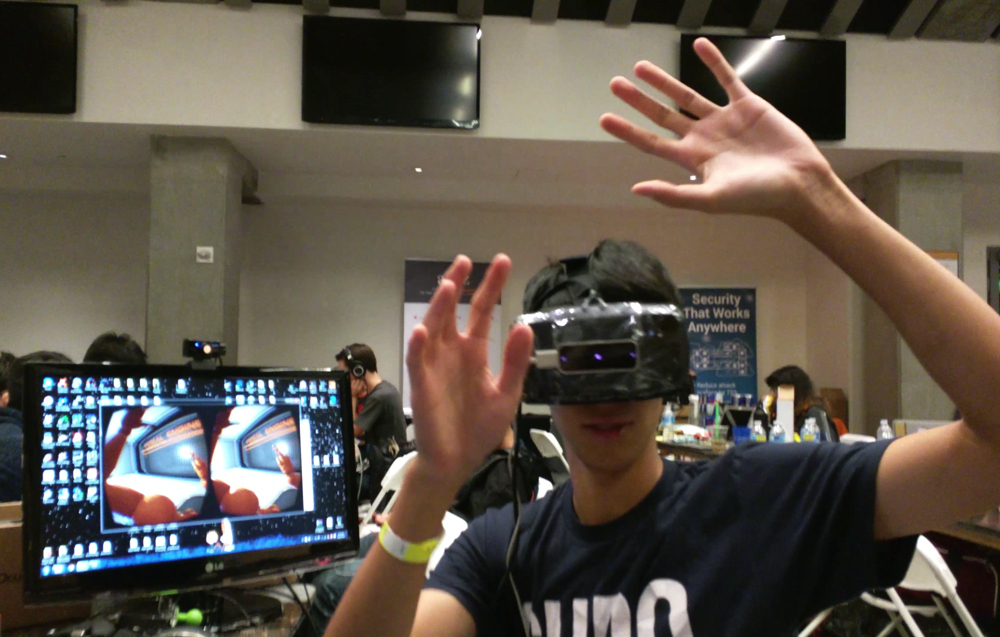
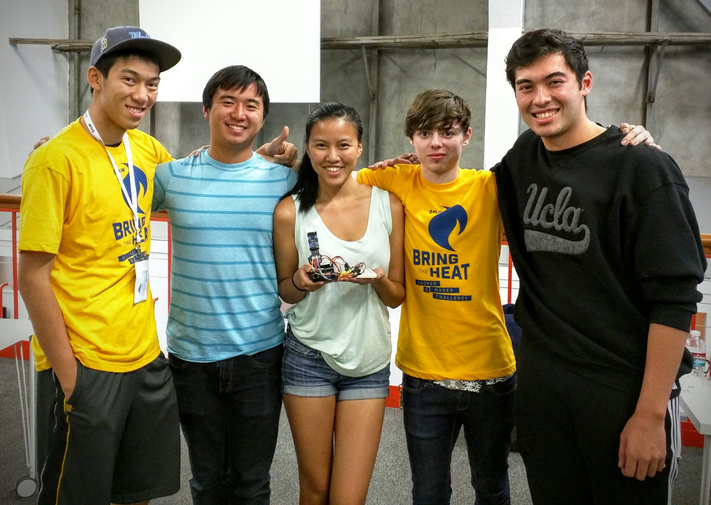
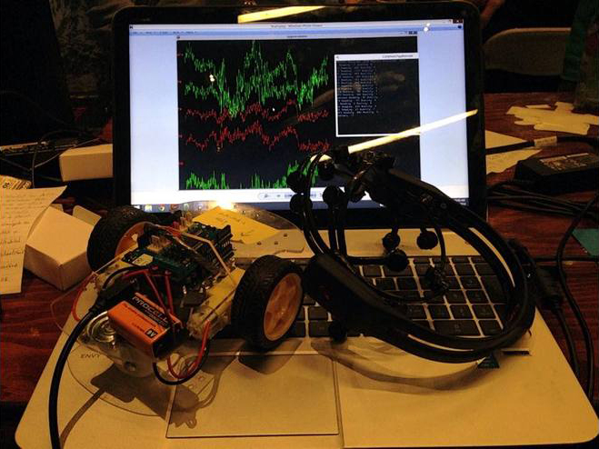
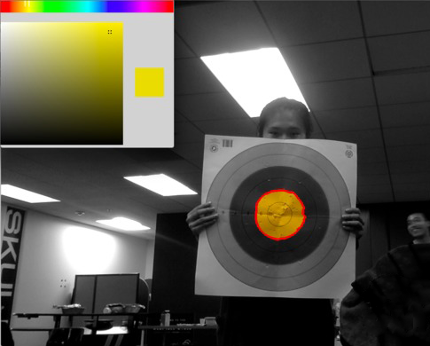

WalkVR
(October 2015)
Created a full body VR experience using the Oculus Rift DK2, Leep Motion, and Myo Armband. The Leep Motion tracked hand genstures while the Myo Armband was used around the ankle to track walking.
WalkVR Devpost
WalkVR GitHub
SlugTrails
(January 2015)
SlugTrails in an app for Android and iPhone that aims to track wildlife spottings. When the user spots a wild animal, they would tag the animal using this app which then enters the spotting into a database. After tagging a spotting, the user can visualize tagged data in a map or list view.
SlugTrails Devpost
SlugTrails GitHub
ObjectRekt
(June 2015)
ObjectRekt uses the FLIR Lepton, a longwave infrared thermal imager, along with OpenCV object recognition to create an automated camera that observes the scene and tracks a presenter's location, panning to the proper locations. The Lepton sensor and the Rasperry-Pi's camera were attached to a 3D printed servo mount.
ObjectRekt Devpost
ObjectRekt GitHub
EmoCar
(October 2014)
Mind-controlled Arduino Uno Rover using an Emotiv EPOC neroheadset. By readding raw EEG data from the headset, we were able to isolate and understand what part of the brain is responsible for spacial thinking (parietal lobe). Used machine learning in order to train a threshold for the brain activity which allowed us to create a "GO" command to the rover.
EmoCar Devpost
EmoCar GitHub
Hartbeat

(September 2014)
A heart rate based FPS game made using Unrealscrip and UDK. Using an optical heart rate sensor and an Arduino, we gathered heart rate information which then was used to vary the player's spread radius in-game.
Hartbeat Devpost
Hearbeat GitHub
findAR
(August 2014)
An Oculus Rift augmented reality application that allows the user to view their world through various filters such as grey-scale, spia, black/white, outline, and hue gradient. It also has color picker and facial recognition modes. The color picker mode filters out all other colors besides the selected color. The facial recognition mode uses machine learning and a small database of photos to match faces to the photos in the database and display the name.